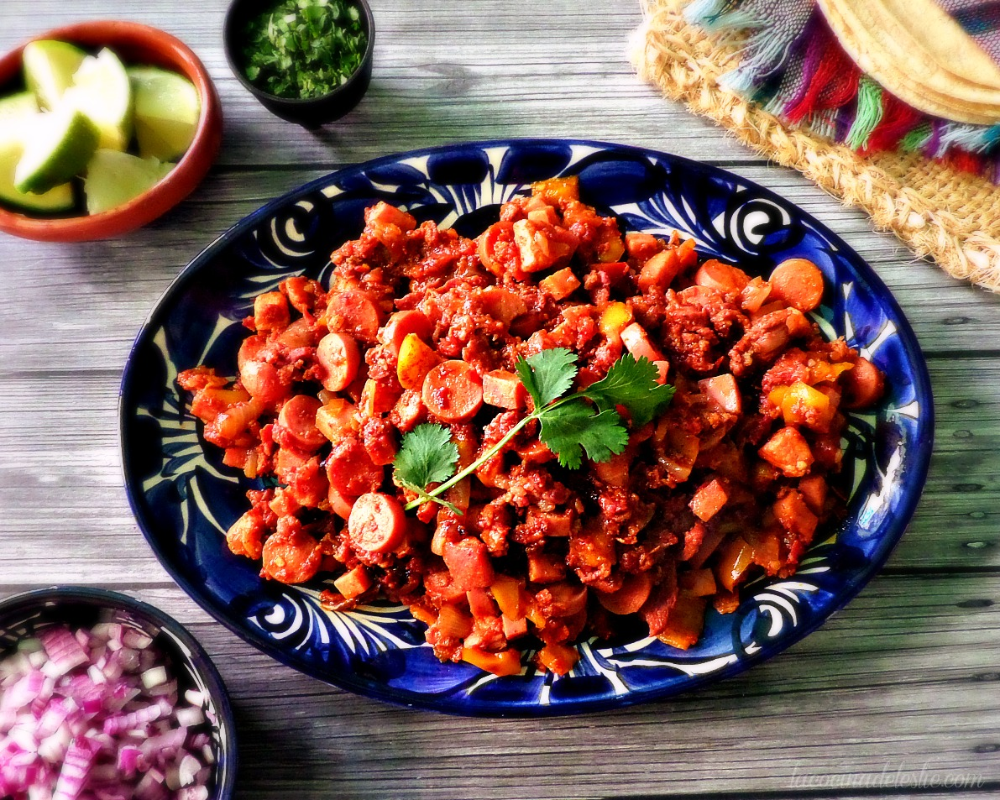

Discada

Description
Discada is a very yummy Mexican dish. It is a mixed-meat dish cooked on a
large "disco" plate. It includes several meats, vegetables, and seasonigs,
all mixed together into a scrumptious meal. It is typically prepared
outdoors for gatherings and celebrations, and is then served on corn
tortillas garnished with cilantro, guacamole, and lime.
Ingredients
- 1/2 kilo of Bottom Round Roast
- 4 Beef Franks
- 1 Whole White Onion
- 3 Roma Tomatos
- 2 Fresh Jalapeños
Steps
- Dice the bottom round roast into 1cm cubes
- Dice the beef franks into fourths, then thin slices
- Dice the onion, roma tomatos, and jalapeños
- Begin cooking diced meat in medium high heat
- After a minute, add all the onions and cook until caramelized
-
Add the diced beef franks and jalapeños together, and cook for a minute
-
Lastly, add the tomatos, let it cook for another minute, and its ready
to serve